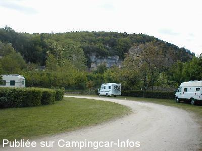

ASN = Aire de services avec stationnement nuit possible de :
LES EYZIES DE TAYAC SIREUIL
(N° 657)
Accès/adresse :
Promenade de la Vézère
Parking de la Vezère
24620 LES EYZIES DE TAYAC SIREUIL
Parking de la Vezère
24620 LES EYZIES DE TAYAC SIREUIL
Latitude : (Nord) 44.93875° Décimaux ou 44° 56′ 19′′
Longitude : (Est) 1.0092° Décimaux ou 1° 0′ 33′′
Tarif : 2015
Stationnement nuitée : 5 €
Services : 2 €
Passage d'un agent pour encaisser
Type de borne : RACLET
Services :


Tous commerces
Table de pique-nique
Autres informations :
Emplacements spacieux, arborés, accès facile
Tél Office du Tourisme : +33(0)553 069 705
Le 22/08/2014 par claire70
Le 22/08/2014 par claire70
Le 18/04/2007 par jele

Le 02/11/2005 par stephanefefe
de
ge38690
le 06/10/2015 :
de passage le 17 septembre 2015
grande aire très bien située mais je déconseille les jours de pluie.
de passage le 17 septembre 2015
grande aire très bien située mais je déconseille les jours de pluie.
de
ixeo23
le 06/07/2015 :
de passage le 14 juin 2015; confirmation 5€00 , attention aux branches basses des arbres , vérifier télé car elle ne fonctionne pas partout. Aire propre, calme, bien située
de passage le 14 juin 2015; confirmation 5€00 , attention aux branches basses des arbres , vérifier télé car elle ne fonctionne pas partout. Aire propre, calme, bien située
de
INQUEL Gérard
le 30/06/2015 :
§De passage le 27/03/2015 aire toujours aussi agréable et très bien située pour 5E ce qui explique sa grande fréquentation.Calme et proximité des toutes les activités sportives et touristiques.
§De passage le 27/03/2015 aire toujours aussi agréable et très bien située pour 5E ce qui explique sa grande fréquentation.Calme et proximité des toutes les activités sportives et touristiques.
de
apple44
le 20/05/2015 :
De passage mi-avril sur cette très belle aire à 5€ mais qui les vaux bien. Sur cet ancien camping à 2 pas de la ville et ses commerces. Beaucoup d'espace mais ce doit être moins vrai l'été. calme même s'il passe quelques trains, des tables de pique nique et même un bloc sanitaire. Services payants en plus. Il faut visiter la ville petite mais agréable cœur de la préhistoire avec son Pôle International de la Préhistoire gratuit et instructif. Nous avons fait aussi l'abri Cro Magnon génial et à qq km la maison forte de Reignac génial aussi.
L'intermarché est vraiment mini et pas génial mais ça peut dépanner...
De passage mi-avril sur cette très belle aire à 5€ mais qui les vaux bien. Sur cet ancien camping à 2 pas de la ville et ses commerces. Beaucoup d'espace mais ce doit être moins vrai l'été. calme même s'il passe quelques trains, des tables de pique nique et même un bloc sanitaire. Services payants en plus. Il faut visiter la ville petite mais agréable cœur de la préhistoire avec son Pôle International de la Préhistoire gratuit et instructif. Nous avons fait aussi l'abri Cro Magnon génial et à qq km la maison forte de Reignac génial aussi.
L'intermarché est vraiment mini et pas génial mais ça peut dépanner...
de
eastwood
le 29/08/2014 :
Y avons passé trois nuits : idéal pour la visite des Eyzies car l'aire se trouve en centre ville... Attention, le marché se tenant le lundi matin, l'accès est un peu plus difficile (il faut rouler tout doucement) en pente jusqu'à l'accès à l'aire sous le pont SNCF. A trois minutes à pied du départ des descentes en canoés ... et à dix minutes à pied de Laugerie Basse... Je recommande aussi la visite du Musée de la Préhistoire et des grottes renommées (Fond de Gaume) qui sont hélas prises d'assaut.... Un petit plus pour le PIP à 10 mn de l'aire qui autorise la consultation gratuit des mails dans sa bibliothèque... L'intermarché se trouve à 10 mn à pied aussi de même que tous les commerces du village.
Il y a un WC fixe pour homme, pour femme et pour les handicapés.... De plus, l'aire est le point de départ des randonnées (des 7 tours : 6 km ; des gorges d'Enfer : 10 km et de la Petite Motte : 6 km)...
Y avons passé trois nuits : idéal pour la visite des Eyzies car l'aire se trouve en centre ville... Attention, le marché se tenant le lundi matin, l'accès est un peu plus difficile (il faut rouler tout doucement) en pente jusqu'à l'accès à l'aire sous le pont SNCF. A trois minutes à pied du départ des descentes en canoés ... et à dix minutes à pied de Laugerie Basse... Je recommande aussi la visite du Musée de la Préhistoire et des grottes renommées (Fond de Gaume) qui sont hélas prises d'assaut.... Un petit plus pour le PIP à 10 mn de l'aire qui autorise la consultation gratuit des mails dans sa bibliothèque... L'intermarché se trouve à 10 mn à pied aussi de même que tous les commerces du village.
Il y a un WC fixe pour homme, pour femme et pour les handicapés.... De plus, l'aire est le point de départ des randonnées (des 7 tours : 6 km ; des gorges d'Enfer : 10 km et de la Petite Motte : 6 km)...
de
claire70
le 22/08/2014 :
Nous y avons dormi 2 nuit mi aout.la policière est passée nous faire régler les 5 euros. Nous avons appris que nous pouvions régler soit à l'office du tourisme soit à la mairie pour ne pas être dérangé le matin. Nuit calme.
Nous y avons dormi 2 nuit mi aout.la policière est passée nous faire régler les 5 euros. Nous avons appris que nous pouvions régler soit à l'office du tourisme soit à la mairie pour ne pas être dérangé le matin. Nuit calme.
de
lebullois
le 09/06/2014 :
De passage en mai, toujours très belle aire malheureusement le temps n'y était pas, sommes restés une nuit. Merci à la commune.
De passage en mai, toujours très belle aire malheureusement le temps n'y était pas, sommes restés une nuit. Merci à la commune.
de
Ruisseau
le 30/04/2014 :
Nous s'y sommes restés 9 jours mi-avril 2014 dans un calme absolu,beaucoup de choses à faire(rando,visites de sites archéologiques musée,PIP ECT....)Merci la municipalité.
Nous s'y sommes restés 9 jours mi-avril 2014 dans un calme absolu,beaucoup de choses à faire(rando,visites de sites archéologiques musée,PIP ECT....)Merci la municipalité.
de
Fray
le 18/03/2014 :
Merci a la municipalité pour l'aire de Camping Car,trés bien située,et très propre. De passage le 12/03/2014
Merci a la municipalité pour l'aire de Camping Car,trés bien située,et très propre. De passage le 12/03/2014
de
CARTE Bernard.
le 14/10/2013 :
Cinq euros,c'est un fait,mais qu'est ce qu'on y est bien
Cinq euros,c'est un fait,mais qu'est ce qu'on y est bien
de
Monida
le 03/10/2013 :
Aire superbe. 5 € la nuit une policière municipale passe récupérer l'argent. WC avec lavabo. Proche de la ville et des commerces. Joli village.
Aire superbe. 5 € la nuit une policière municipale passe récupérer l'argent. WC avec lavabo. Proche de la ville et des commerces. Joli village.
de
Anita Bastrenta
le 14/08/2013 :
§ passage en juillet 2013. Aire en partie en bord de rivière et ombragée. très occupée dès le milieu d'après-midi. nous avons stationné en bordure d'une haie derrière laquelle se cachait...une table à pique nique. Bien située pour la visite.
au niveau des services : rien à redire.
§ passage en juillet 2013. Aire en partie en bord de rivière et ombragée. très occupée dès le milieu d'après-midi. nous avons stationné en bordure d'une haie derrière laquelle se cachait...une table à pique nique. Bien située pour la visite.
au niveau des services : rien à redire.
de
philb01
le 15/08/2011 :
stationnement agreable, proche du centre ville,mais attention beaucoup de monde en fin d'aprés midi.Beaucoup de possibilités de stationnement.
stationnement agreable, proche du centre ville,mais attention beaucoup de monde en fin d'aprés midi.Beaucoup de possibilités de stationnement.
de
Mike & Jackie B
le 06/09/2005 :
Stayed Aug 2005. Super little spot, all the pitches marked out with hedges and no cars allowed in!Quite handy for market right alongside bridge and river. Lovely little town with prehistoric museum and good views. If arriving on Monday (Market day) suggest turn right IMMEDIATELY after crossing river down track along side river towards next bridge-aire on left just before bridge.(Bit difficult to find at 1st attempt) Alternatively drive down through market, right under bridge at bootom and aire is on your right
Stayed Aug 2005. Super little spot, all the pitches marked out with hedges and no cars allowed in!Quite handy for market right alongside bridge and river. Lovely little town with prehistoric museum and good views. If arriving on Monday (Market day) suggest turn right IMMEDIATELY after crossing river down track along side river towards next bridge-aire on left just before bridge.(Bit difficult to find at 1st attempt) Alternatively drive down through market, right under bridge at bootom and aire is on your right